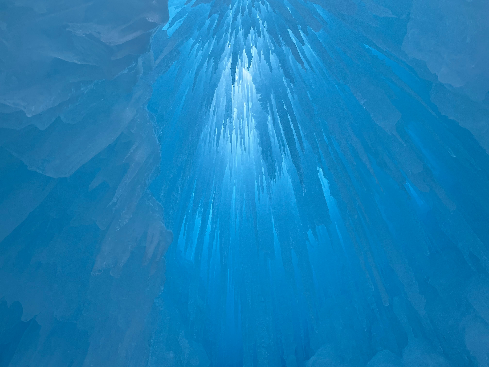
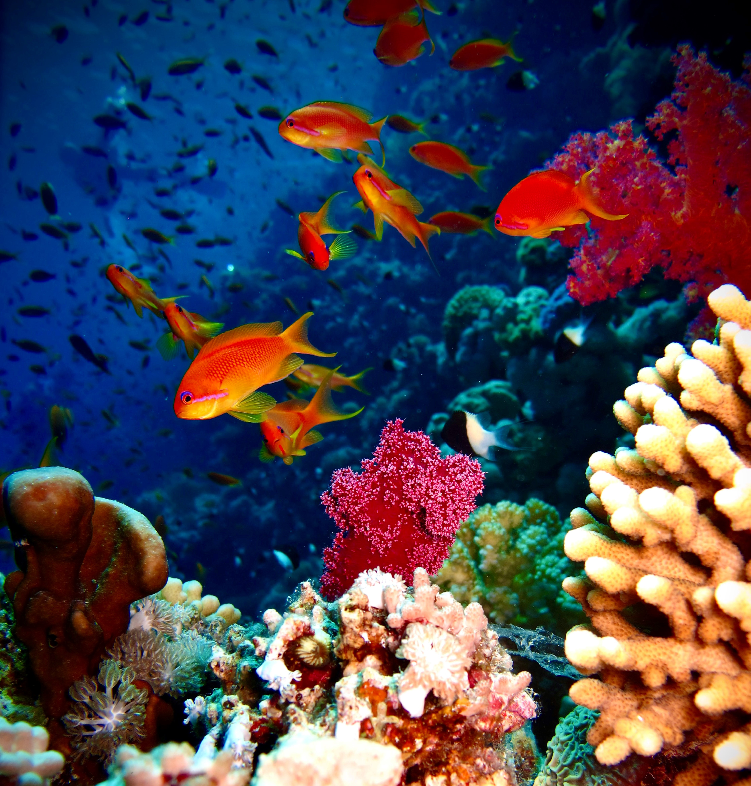
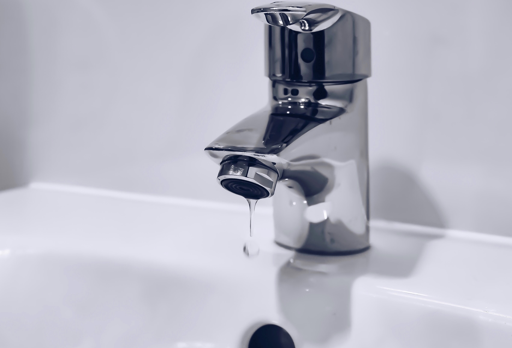

- Μόνο το 1% του νερού της Γης είναι πόσιμο
- Υπάρχει ένα "φύλλο" πάγου μεγαλύτερο από τις ηπειρωτικές Ηνωμένες Πολιτείες.
- Ένα παγόβουνο θα μπορούσε να τροφοδοτήσει ένα εκατομμύριο ανθρώπους με πόσιμο νερό για πέντε χρόνια
- Το νερό στο κάτω μέρος του ωκεανού είναι απίστευτα ζεστό.
- Το νερό από τον πάγο του θαλλασινού νερού είναι πόσιμο
- Η πίεση στον πυθμένα του ωκεανού μπορεί να σε συνθλίψει σαν μυρμήγκι
- Ο ωκεανός φιλοξενεί σχεδόν το 95% όλης της ζωής
- Περισσότερο από το 90 τοις εκατό των μορφών ζωής του πλανήτη δεν έχουν ανακαλυφθεί ακόμα καθώς βρίσκονται υποβρύχια.
- Υπάρχουν 3 εκατομμύρια ναυάγια στον ωκεανό
- Υπάρχει αρκετός χρυσός στον ωκεανό για να έχει ο καθένας μας 9 κιλά
- Η Τάφρος των Μαριανών (Mariana Trench) είναι το βαθύτερο σημείο των ωκεανών του πλανήτη
- Αν αφήσουμε ανοιχτή την βρύση την ώρα που πλένουμε τα δόντια μας σπαταλάμε 20 λίτρα νερού
- Ο ωκεανός είναι η μεγαλύτερη πηγή οξυγόνου μας

Παρόλο που το 70% της Γης καλύπτεται από το νερό,μόλις το 1% αυτού του νερού είναι πόσιμο και αυτό το ποσοστό πρέπει να μοιραστεί και να καλύψει τις ανάγκες 6,4 δισεκατομμυρίων ανθρώπων. Εξαιτίας, λοιπόν αυτής της δυσαναλογίας οι πολίτες των υπανάπτυκτων χωρών δεν μπορούν να εξασφαλίσουν πρόσβαση στο πόσιμο νερό.
Σύμφωνα με το National Snow & Ice Data Center (NSIDC) το φύλλο πάγου της Ανταρκτικής έχει φτάσει τα 5,4 εκατομμύρια τετραγωνικά μίλια που είναι περίπου το μέγεθος των ηπειρωτικών Ηνωμένων Πολιτειών και του Μεξικού που συνδυάζονται!
Ένα μεγάλο παγόβουνο από την Ανταρκτική περιέχει περισσότερα από 20 δισεκατομμύρια γαλόνια νερού.Γι αυτό μια εταιρεία στα Ηνωμένα Αραβικά Εμιράτα σχεδιάζει να ξεκινήσει να έλκει παγόβουνα από την Ανταρκτική στην ακτή για να λύσει το πρόβλημα της ξηρασίας.
Σε αυτά τα βαθύτερα μέρη του ωκεανού, η θερμοκρασία του νερού μπορεί να είναι μόνο 2º έως 4º Κελσίου, με εξαίρεση το νερό που βγαίνει από υδροθερμικούς αεραγωγούς στον πυθμένα. Το νερό που απελευθερώνεται από αυτούς τους αεραγωγούς μπορεί να φτάσει τους 400º Κελσίου
Δεν μπορείτε να πιείτε θαλασσινό νερό, αλλά μπορείτε να πιείτε πάγο από θαλασσινό νερό. Ο φρέσκος πάγος έχει μικρές τσέπες άλμης παγιδευμένες μεταξύ κρυστάλλων πάγου.Καθώς όμως μεγαλώνει, η άλμη αποστραγγίζεται και, σύμφωνα με το NSIDC, μπορεί να λιώσει και να καταναλωθεί.
Στην τάφρο των Μαριανών (35.802 πόδια κάτω από την επιφάνεια), που περιλαμβάνει το βαθύτερο σημείο του πλανήτη, η πίεση του νερού είναι οκτώ τόνοι ανά τετραγωνική ίντσα. Αν φτάσατε εκεί, θα αισθανόσασταν ότι κρατούσατε σχεδόν 50 jumbo jets(αεροσκάφη).
Με τόσα πολλά να συμβαίνουν πολύ κάτω από την επιφάνεια, είναι εύκολο να ξεχνάμε ότι οι ωκεανοί είναι γεμάτοι ζωή. Στην πραγματικότητα, το 94 τοις εκατό της ζωής είναι υδρόβιο, σύμφωνα με το USA Science & Engineering Festival. Αυτό σημαίνει ότι όσοι από εμάς ζούμε στη στεριά είναι μέρος μιας πολύ μικρής μειονότητας.
Λόγω της δυσκολίας εξερεύνησης στους ωκεανούς, εκτιμάται ότι το 91% των ειδών που υπάρχουν κάτω από τη θάλασσα δεν έχουν ακόμη ανακαλυφθεί, σύμφωνα με μια μελέτη του 2011 που δημοσιεύθηκε στο PLoS Biology.
.jpg)
Από τον Τιτανικό έως το Santa Maria του Χριστόφορου Κολόμβου, οι ωκεανοί φιλοξενούν περίπου 3 εκατομμύρια ναυάγια, σύμφωνα με τον Εκπαιδευτικό, Επιστημονικό και Πολιτιστικό Οργανισμό των Ηνωμένων Εθνών
Υπάρχουν περίπου 20 εκατομμύρια τόνοι χρυσού διασκορπισμένοι σε όλους τους ωκεανούς, αλλά δεν είναι οικονομικά αποδοτικό να εξορυχθεί.
Βρίσκεται στον δυτικό Ειρηνικό Ωκεανό στα ανατολικά των Μαριάνων νήσων και φτάνει στα 10.983 μέτρα κάτω από την επιφάνεια της θάλασσας.
Αυτή η ποσότητα νερού είναι αρκετή ώστε να ένας μέσος άνθρωπος να καλύψει την ανάγκη του για νερό για 10 ημέρες.
Το μεγαλύτερο μέρος του οξυγόνου στην ατμόσφαιρά μας προέρχεται από μικροσκοπικά θαλάσσια φυτά στον ωκεανό - φυτοπλαγκτόν, φύκια και πλαγκτόν φυκών. Οι επιστήμονες εκτιμούν ότι είναι υπεύθυνοι για περίπου το 70% του οξυγόνου της ατμόσφαιρας, σύμφωνα με το National Geographic